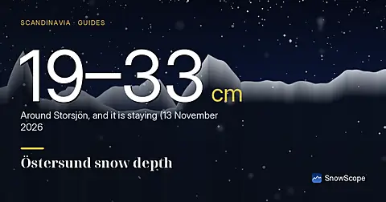

Romme Alpin snow: a few centimetres in Borlänge, snow guns before the slopes (14 November 2026)
Romme is a low hill near Borlänge, from 141 to 406 m, and it lives mostly on made snow. On the morning of 13 November the weather station at Borlänge, 12 km away at 146 m, measured 4 cm after bare ground the day before. Ludvika, at 206 m, had 10 cm; Falun, at 161 m, still had nothing. The resort says its snowmaking team is already at work, and the season starts on 19 December.
See the live snow forecast for Romme Alpin in the SnowScope appSnow depth, powder alerts and the 3D map, free.

A patchy first cover
The snow that fell on 12 and 13 November landed unevenly: 10 cm at Ludvika in the west, 7 cm at Bjursås north of Falun, 4 cm at Borlänge and none at Falun. That patchiness is normal for the first snow at this height: a few metres of height, a little wind or a city nearby decide whether it settles.
Our estimate for the last seven days is about 8 cm of new snow at the top of the hill and 5 cm at the bottom.

Rain this week
Our forecast for the next seven days is close to zero snow. The other forecasts we check give 1 to 7 cm at the top at most, and they agree that most of the water will fall as rain: about 85 % at the base and 70 % at the top. The snow line climbs to about 640 m, higher than the whole hill. Expect today's thin cover to disappear.
Why Romme counts on snow guns
Our 46 past winters show how little natural snow this hill usually has in early winter: the usual depth on 14 November is 1 cm, on 30 November 6 cm and on 15 December 10 cm. In 41 % of winters there is no natural snow at all on 14 November.
The trend points the same way. The middle natural peak was 49 cm over the first 15 winters and 34 cm over the last 15, and snow days fell from 136 to 97. That is why the opening depends on cold nights for snowmaking, not on snowfall.
When does Romme open?
The resort's opening-hours page gives slopes and lifts from 19 December to 4 April, daily. It does not print the year next to the dates; the season is the 2026/27 one.
Tips for skiers
- Natural snow in the forest around Romme will probably not last this week; do not plan a cross-country trip on it.
- Snowmaking needs cold, dry nights. A mild spell like this one can push work back by days.
- Watch the resort's 'Romme idag' page for the real opening status.
More maps (external sites)
References and credits
- SMHI, open data: daily snow depth at Swedish weather stations www.smhi.se/data/meteorologi/ladda-ner-meteorologiska-observationer
- Romme Alpin, official site: opening dates and lift status, read 2026-11-13 www.rommealpin.se/sv/om-oss/oppettider
- Romme Alpin, Romme idag (official status) www.rommealpin.se/sv/romme-idag
About these numbers
Measured snow: morning readings of 13 November 2026 at the official weather stations of Sweden (SMHI open data), Finland (FMI open data, CC BY 4.0) and Norway (MET Norway station reports, CC BY 4.0, as published by Ogimet). Norway's national snow map seNorge (NVE and MET Norway, NLOD) gives the estimates on a 1 km grid for the slopes. Opening dates: the resorts' own pages, read on 13 November 2026. Run length and lift count: OpenSkiMap mapping.
Official avalanche bulletins: Lavinprognoser (Naturvårdsverket)
Cite this report
For research, teaching or the press: the numbers and charts are free to reuse under CC BY 4.0 with this citation.
SnowScope (2026), Romme Alpin snow: a few centimetres in Borlänge, snow guns before the slopes (14 November 2026), https://snowscope.app/blog/en/2026/11/romme-alpin-snow-14-november-2026.html, accessed 2026-11-14
SnowScope (Atlas Labs). (2026, November 14). Romme Alpin snow: a few centimetres in Borlänge, snow guns before the slopes (14 November 2026). SnowScope snow reports. https://snowscope.app/blog/en/2026/11/romme-alpin-snow-14-november-2026.html
BibTeX
@misc{snowscope2026rommealpinsnow14november,
author = {{SnowScope (Atlas Labs)}},
title = {Romme Alpin snow: a few centimetres in Borlänge, snow guns before the slopes (14 November 2026)},
year = {2026},
month = nov,
howpublished = {\url{https://snowscope.app/blog/en/2026/11/romme-alpin-snow-14-november-2026.html}},
note = {Published 2026-11-14 21:09 UTC; accessed 2026-11-14}
}· CC BY 4.0 · Methods, data and tools →
Romme Alpin: snow and temperature by height, this winter vs last (tools) →
Follow Romme Alpin
Free: a message when fresh snow is coming, and the forecast every morning.
More snow reports

Measured snow around Östersund on 13 November 2026: 19 cm at Norderön, 24 cm at Marby, 33 cm at Rissna. Three to four times the usual depth for the date, with a cold, dry weekend ahead.

Measured snow depth in Oslo on 13 November 2026: 4 cm at Blindern, 31 cm at Bjørnholt and 37 cm at Tryvannshøgda. What a normal mid-November looks like, and what the weekend does to it.

Dog owners in Oslo, 13 November 2026: 4 cm of snow at Blindern, 31 cm at Bjørnholt and 37 cm at Tryvannshøgda. Where dogs may run free, what the leash rules say in November, and a cold, dry Saturday.